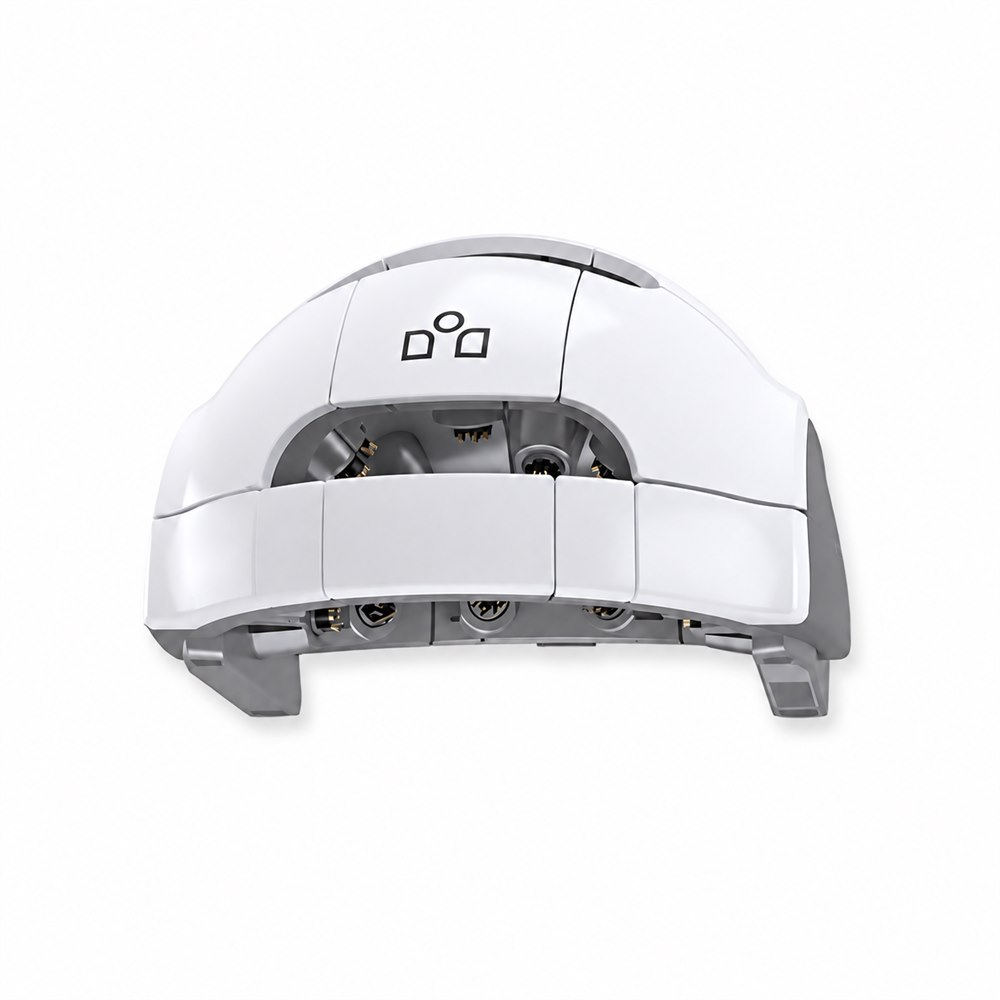
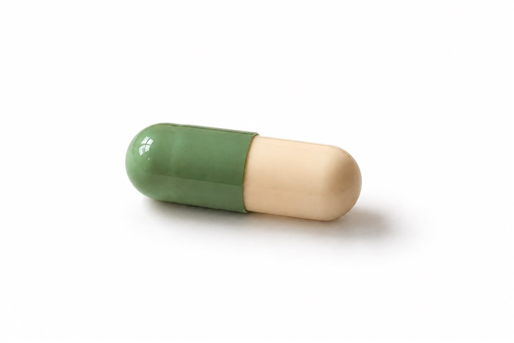
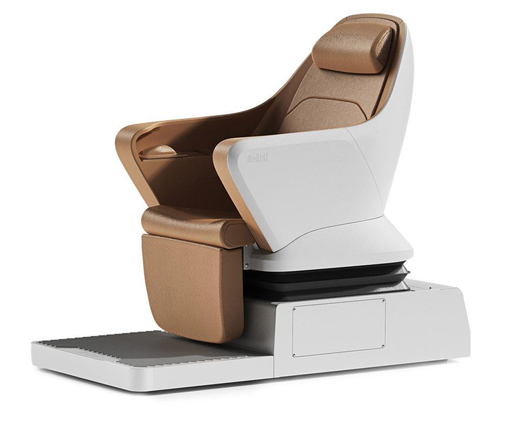
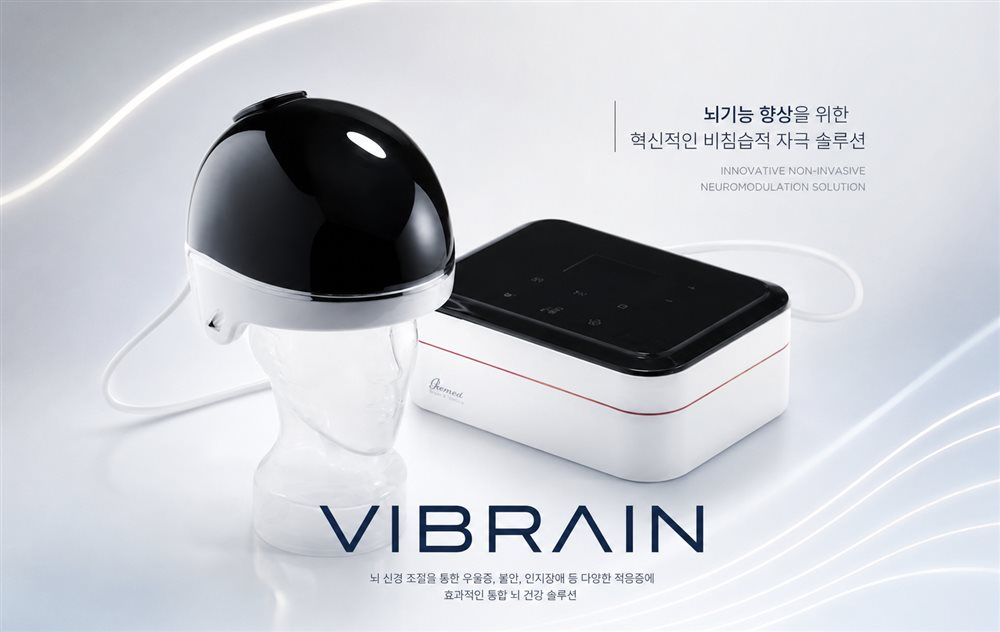
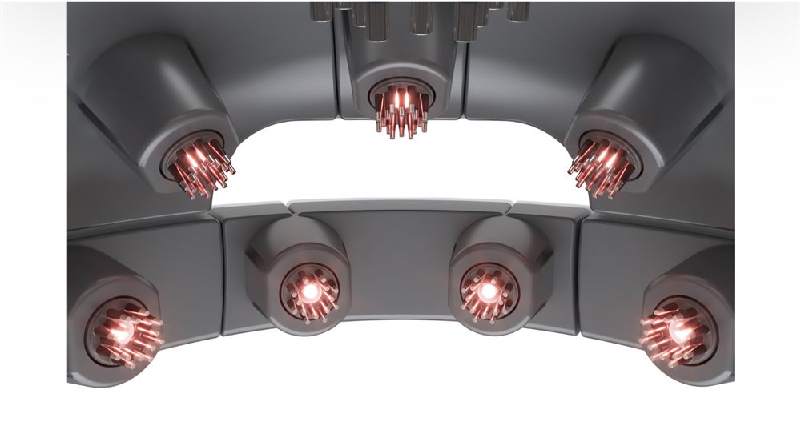
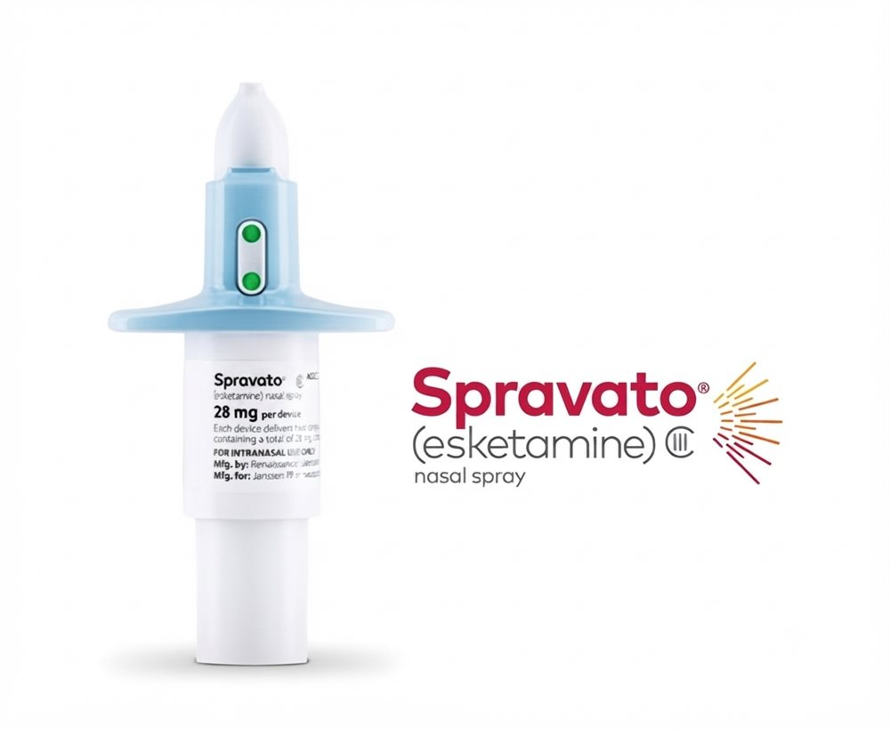

우울
가라앉은 기분, 의욕 저하와 무기력
2026년 11월 오픈 예정
마음이 회복되면, 삶이 다시 움직입니다.
문결은 마음의 문이자, 저마다 다른 마음의 결을 담은 이름입니다.
여러분의 문결은 어떠십니까?
여러분의 잠결은 어떠십니까?
About Moon Gyeol
한 사람의 증상 너머에는, 그 사람만의 생활과 이야기가 있습니다. 문결 정신건강의학과는 진단명 하나로 사람을 설명하지 않습니다.
마음의 어려움은 단순히 감정의 문제가 아니라 몸과 뇌, 수면과 생활 리듬이 함께 얽혀 있는 문제라고 생각합니다. 그래서 문결은 필요한 만큼 정확하게 살펴보고, 그 사람에게 맞는 방법으로 함께 회복의 길을 찾아갑니다.
문결 정신건강의학과 대표원장
저술
『당신이라는 이름의 별이 궁금합니다』 저자
YouTube
정신건강과 마음에 관한 다양한 이야기를 전하는 스토리가 있는 정신과 채널 운영
Mind & Sleep
가라앉은 기분, 의욕 저하와 무기력
지속되는 불안과 예기치 못한 공황 증상
불면, 과다수면, 수면 리듬의 문제
지친 마음과 몸의 회복
주의력, 실행기능, 충동성의 어려움
기억력 저하와 인지기능 변화에 대한 평가와 관리
기존 치료에 충분히 반응하지 않는 우울증
Mind & Brain Assessment

뇌파를 통해 현재의 뇌기능 상태를 살펴봅니다.
자세히 보기 →심박변이도(HRV)를 통해 현재의 자율신경계 상태와 스트레스에 따른 신체 변화를 살펴봅니다.
자세히 보기 →주의력과 충동조절 등 ADHD와 관련된 인지기능을 객관적으로 평가합니다.
자세히 보기 →기억력부터 주의력, 처리속도와 실행기능까지 다양한 인지기능을 평가합니다.
자세히 보기 →뇌파와 인지기능 평가를 통해 경도인지장애 가능성을 선별합니다.
자세히 보기 →심리적 어려움과 개인의 특성을 보다 깊이 이해하기 위해 종합심리평가를 시행합니다.
자세히 보기 →Personalized Treatment

증상과 생활을 함께 고려한 약물치료

호흡과 생리적 신호를 활용한 이완 및 스트레스 조절
자세히 보기 →
비침습적 뇌자극을 이용한 치료
자세히 보기 →
빛을 이용한 비침습적 광생체조절 치료
자세히 보기 →
치료저항성 우울증을 위한 전문적인 치료
자세히 보기 →문결심리상담센터
문결 정신건강의학과와 함께하는 전문 심리상담사의 심리상담 프로그램을 제공합니다.
Our System
정확하게 살펴봅니다.
증상과 생활습관, 수면, 스트레스, 인지기능 등을 종합적으로 평가합니다.
이해합니다.
검사 결과와 현재 상태를 환자에게 알기 쉽게 설명합니다.
치료합니다.
약물치료와 비약물치료 중 필요한 치료를 조합합니다.
다시 일상으로.
치료의 목표는 단순히 증상을 없애는 것이 아니라 삶을 회복하는 것입니다.
A Space to Recover
편안하게 들어오는 첫 번째 문
정확한 평가를 위한 공간
몸과 마음의 긴장을 낮추는 공간
뇌자극과 이완을 함께하는 공간
조용한 회복을 위한 공간
마음이 힘들고, 잠이 무너지고,
다시 일상으로 돌아가는 일이 버겁다면
혼자 견디지 않으셔도 됩니다.
문결 정신건강의학과가 함께하겠습니다.
※ 대표번호로 연결됩니다. 실제 예약 링크/전화번호로 교체해 주세요.